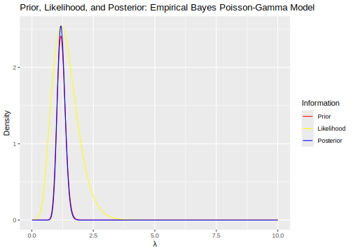

1.2 Bayesian framework: A brief summary of theory
Given an unknown parameter set \(\boldsymbol{\theta}\), and a particular realization of the data \(\mathbf{y}\), Bayes’ rule may be applied analogously,6 \[\begin{align} \pi(\boldsymbol{\theta}\mid \mathbf{y})&=\frac{p(\mathbf{y}\mid \boldsymbol{\theta}) \times \pi(\boldsymbol{\theta})}{p(\mathbf{y})}, \tag{1.3} \end{align}\]
where \(\pi(\boldsymbol{\theta}\mid \mathbf{y})\) is the posterior density function, \(\pi(\boldsymbol{\theta})\) is the prior density, \(p(\mathbf{y}\mid \boldsymbol{\theta})\) is the likelihood (econometric/statistical model), and
\[\begin{equation} p(\mathbf{y})=\int_{\mathbf{\Theta}}p(\mathbf{y}\mid \boldsymbol{\theta})\pi(\boldsymbol{\theta})d\boldsymbol{\theta}=\mathbb{E}\left[p(\mathbf{y}\mid \boldsymbol{\theta})\right] \tag{1.4} \end{equation}\]
is the marginal likelihood, prior predictive or evidence. Observe that for this expected value to be meaningful, the prior should be a proper density, that is, it must integrate to one; otherwise, it does not make sense.
Observe that \(p(\mathbf{y} \mid \boldsymbol{\theta})\) is not a density in \(\boldsymbol{\theta}\). In addition, \(\pi(\boldsymbol{\theta})\) does not have to integrate to 1, that is, \(\pi(\boldsymbol{\theta})\) can be an improper density function, \(\int_{\mathbf{\Theta}} \pi(\boldsymbol{\theta}) d\boldsymbol{\theta} = \infty\). However, \(\pi(\boldsymbol{\theta} \mid \mathbf{y})\) is a proper density function, that is, \(\int_{\mathbf{\Theta}} \pi(\boldsymbol{\theta} \mid \mathbf{y}) d\boldsymbol{\theta} = 1\).
For instance, set \(\pi(\boldsymbol{\theta}) = c\), where \(c\) is a constant, then \(\int_{\mathbf{\Theta}} c d\boldsymbol{\theta} = \infty\). However, \[ \int_{\mathbf{\Theta}} \pi(\boldsymbol{\theta} \mid \mathbf{y}) d\boldsymbol{\theta} = \int_{\mathbf{\Theta}} \frac{p(\mathbf{y} \mid \boldsymbol{\theta}) \times c}{\int_{\mathbf{\Theta}} p(\mathbf{y} \mid \boldsymbol{\theta}) \times c \, d\boldsymbol{\theta}} d\boldsymbol{\theta} = 1 \] where \(c\) cancels out.
\(\pi(\boldsymbol{\theta} \mid \mathbf{y})\) is a sample updated “probabilistic belief” version of \(\pi(\boldsymbol{\theta})\), where \(\pi(\boldsymbol{\theta})\) is a prior probabilistic belief which can be constructed from previous empirical work, theoretical foundations, expert knowledge, and/or mathematical convenience. This prior usually depends on parameters, which are named hyperparameters. In addition, the Bayesian approach implies using a probabilistic model about \(\mathbf{Y}\) given \(\boldsymbol{\theta}\), that is, \(p(\mathbf{y} \mid \boldsymbol{\theta})\), where its integral over \(\mathbf{\Theta}\), \(p(\mathbf{y})\), is named the model evidence due to being a measure of model fit to the data.
Observe that the Bayesian inferential approach is conditional, that is, what can we learn about an unknown object \(\boldsymbol{\theta}\) given that we already observed \(\mathbf{ Y} =\mathbf{y}\)? The answer is also conditional on the probabilistic model, that is, \(p(\mathbf{y} \mid \boldsymbol{\theta})\). So, what if we want to compare different models, say \(\mathcal{M}_m\), \(m = \{1,2,\dots,M\}\)? Then, we should make explicit this in the Bayes’ rule formulation: \[\begin{align} \pi(\boldsymbol{\theta}\mid \mathbf{y},\mathcal{M}_m)&=\frac{p(\mathbf{y}\mid \boldsymbol{\theta},\mathcal{M}_m) \times \pi(\boldsymbol{\theta}\mid \mathcal{M}_m)}{p(\mathbf{y}\mid \mathcal{M}_m)}. \tag{1.5} \end{align}\]
The posterior model probability is \[\begin{align} \pi(\mathcal{M}_m\mid \mathbf{y})&=\frac{p(\mathbf{y}\mid \mathcal{M}_m) \times \pi(\mathcal{M}_m)}{p(\mathbf{y})}, \tag{1.6} \end{align}\]
where \(p(\mathbf{y}\mid \mathcal{M}_m)=\int_{\mathbf{\Theta}}p(\mathbf{y}\mid \boldsymbol{\theta},\mathcal{M}_m) \times \pi(\boldsymbol{\theta}\mid \mathcal{M}_m)d\boldsymbol{\theta}\) due to equation (1.5), and \(\pi(\mathcal{M}_m)\) is the prior model probability.
Calculating \(p(\mathbf{y})\) in equations (1.3) and (1.6) is very demanding in most of the realistic cases. Fortunately, it is not required when performing inference about \(\boldsymbol{\theta}\) as this is integrated out from it. Then, all you need to know about the shape of \(\boldsymbol{\theta}\) is in \(p(\mathbf{y} \mid \boldsymbol{\theta}, \mathcal{M}_m) \times \pi(\boldsymbol{\theta} \mid \mathcal{M}_m)\), or without explicitly conditioning on \(\mathcal{M}_m\), \[\begin{align} \pi(\boldsymbol{\theta}\mid \mathbf{y})& \propto p(\mathbf{y}\mid \boldsymbol{\theta}) \times \pi(\boldsymbol{\theta}). \tag{1.7} \end{align}\]
Equation (1.7) is a very good shortcut to perform Bayesian inference about \(\boldsymbol{\theta}\).
We can also avoid calculating \(p(\mathbf{y})\) when performing model selection (hypothesis testing) using the posterior odds ratio, that is, comparing models \(\mathcal{M}_1\) and \(\mathcal{M}_2\),
\[\begin{align} PO_{12}&=\frac{\pi(\mathcal{M}_1\mid \mathbf{y})}{\pi(\mathcal{M}_2\mid \mathbf{y})} \nonumber \\ &=\frac{p(\mathbf{y}\mid \mathcal{M}_1)}{p(\mathbf{y}\mid \mathcal{M}_2)}\times\frac{\pi(\mathcal{M}_1)}{\pi(\mathcal{M}_2)}, \tag{1.8} \end{align}\]
where the first term in equation (1.8) is named the Bayes factor, and the second term is the prior odds. Observe that the Bayes factor is a ratio of ordinates for \(\mathbf{y}\) under different models. Then, the Bayes factor is a measure of relative sample evidence in favor of model 1 compared to model 2.
However, we still need to calculate \(p(\mathbf{y}\mid \mathcal{M}_m) = \int_{\mathbf{\Theta}} p(\mathbf{y}\mid \boldsymbol{\theta}, \mathcal{M}_m) \pi(\boldsymbol{\theta}\mid \mathcal{M}_m) d\boldsymbol{\theta} = \mathbb{E}\left[ p(\mathbf{y}\mid \boldsymbol{\theta}, \mathcal{M}_m) \right]\). For this integral to be meaningful, the prior must be proper. Using an improper prior has unintended consequences when comparing models; for instance, parsimonious models are favored by posterior odds or Bayes factors, and these values may depend on units of measure (see Chapter 3).
A nice feature of comparing models using posterior odds is that if we have an exhaustive set of competing models such that \(\sum_{m=1}^M \pi(\mathcal{M}_m \mid \mathbf{y}) = 1\), then we can recover \(\pi(\mathcal{M}_m \mid \mathbf{y})\) without calculating \(p(\mathbf{y})\). In particular, given two models \(\mathcal{M}_1\) and \(\mathcal{M}_2\) such that \(\pi(\mathcal{M}_1 \mid \mathbf{y}) + \pi(\mathcal{M}_2 \mid \mathbf{y}) = 1\), we have: \[ \pi(\mathcal{M}_1 \mid \mathbf{y}) = \frac{PO_{12}}{1 + PO_{12}} \quad \text{and} \quad \pi(\mathcal{M}_2 \mid \mathbf{y}) = 1 - \pi(\mathcal{M}_1 \mid \mathbf{y}). \] In general, \[ \pi(\mathcal{M}_m \mid \mathbf{y}) = \frac{p(\mathbf{y} \mid \mathcal{M}_m) \times \pi(\mathcal{M}_m)}{\sum_{l=1}^M p(\mathbf{y} \mid \mathcal{M}_l) \times \pi(\mathcal{M}_l)}. \] These posterior model probabilities can be used to perform Bayesian model averaging.
Table 1.1 shows guidelines for the interpretation of \(2\log(PO_{12})\) (Kass and Raftery 1995). This transformation is done to replicate the structure of the likelihood ratio test statistic. However, posterior odds do not require nested models as the likelihood ratio test does.
| \(2\log(PO_{12})\) | \(PO_{12}\) | Evidence against \(\mathcal{M}_{2}\) |
|---|---|---|
| 0 to 2 | 1 to 3 | Not worth more than a bare mention |
| 2 to 6 | 3 to 20 | Positive |
| 6 to 10 | 20 to 150 | Strong |
| > 10 | > 150 | Very strong |
Observe that the posterior odds ratio is a relative criterion, that is, we specify an exhaustive set of competing models and compare them. However, we may want to check the performance of a model on its own or use a non-informative prior. In this case, we can use the posterior predictive p-value (A. Gelman and Meng 1996; A. Gelman, Meng, and Stern 1996).7
The intuition behind the predictive p-value is simple: analyze the discrepancy between the model’s assumptions and the data by checking a potential extreme tail-area probability. Observe that this approach does not check if a model is true; its focus is on potential discrepancies between the model and the data at hand.
This is done by simulating pseudo-data from our sampling model (\(\mathbf{y}^{(s)}, s=1,2,\dots,S\)) using draws from the posterior distribution, and then calculating a discrepancy measure, \(D(\mathbf{y}^{(s)},\boldsymbol{\theta})\), to estimate the posterior predictive p-value, \[ p_D(\mathbf{y}) = P[D(\mathbf{y}^{(s)},\boldsymbol{\theta}) \geq D(\mathbf{y},\boldsymbol{\theta})], \] using the proportion of the \(S\) draws for which \(D(\mathbf{y}^{(s)},\boldsymbol{\theta}^{(s)}) \geq D(\mathbf{y},\boldsymbol{\theta}^{(s)})\). Extreme tail probabilities (\(p_D(\mathbf{y}) \leq 0.05\) or \(p_D(\mathbf{y}) \geq 0.95\)) suggest potential discrepancies between the data and the model. A. Gelman, Meng, and Stern (1996) also suggest the posterior predictive p-value based on the minimum discrepancy, \[ D_{\min}(\mathbf{y}) = \min_{\boldsymbol{\theta}} D(\mathbf{y}, \boldsymbol{\theta}), \] and the average discrepancy statistic \[ D(\mathbf{y}) = \mathbb{E}[D(\mathbf{y}, \boldsymbol{\theta})] = \int_{\mathbf{\Theta}} D(\mathbf{y}, \boldsymbol{\theta}) \pi(\boldsymbol{\theta} \mid \mathbf{y}) d\boldsymbol{\theta}. \] These alternatives can be more computationally demanding.
The Bayesian approach is also suitable to get probabilistic predictions, that is, we can obtain a posterior predictive density
\[\begin{align} \pi(\mathbf{y}_0\mid \mathbf{y},\mathcal{M}_m) & =\int_{\mathbf{\Theta}}\pi(\mathbf{y}_0,\boldsymbol{\theta}\mid \mathbf{y},\mathcal{M}_m)d\boldsymbol{\theta}\nonumber\\ &=\int_{\mathbf{\Theta}}\pi(\mathbf{y}_0\mid \boldsymbol{\theta},\mathbf{y},\mathcal{M}_m)\pi(\boldsymbol{\theta}\mid \mathbf{y},\mathcal{M}_m)d\boldsymbol{\theta}. \tag{1.9} \end{align}\]
Observe that equation (1.9) is again an expectation \(\mathbb{E}[\pi(\mathbf{y}_0 \mid \boldsymbol{\theta}, \mathbf{y}, \mathcal{M}_m)]\), this time using the posterior distribution.8 Therefore, the Bayesian approach takes estimation error into account when performing prediction.
As we have shown many times, expectation (integration) is a common feature in Bayesian inference. That is why the remarkable relevance of computation based on Monte Carlo integration in the Bayesian framework.
Bayesian model averaging (BMA) allows for considering model uncertainty in prediction or any unknown probabilistic object. In the case of the predictive density,
\[\begin{align} \pi(\mathbf{y}_0\mid \mathbf{y})&=\sum_{m=1}^M \pi(\mathcal{M}_m\mid \mathbf{y})\pi(\mathbf{y}_0\mid \mathbf{y},\mathcal{M}_m). \end{align}\] In the case of the posterior density of the parameters, \[\begin{align} \pi(\boldsymbol{\theta}\mid \mathbf{y})&=\sum_{m=1}^M \pi(\mathcal{M}_m\mid \mathbf{y})\pi(\boldsymbol{\theta}\mid \mathbf{y},\mathcal{M}_m), \end{align}\] where \[\begin{align} \mathbb{E}(\boldsymbol{\theta}\mid \mathbf{y})=\sum_{m=1}^{M}\hat{\boldsymbol{\theta}}_m \pi(\mathcal{M}_m\mid \mathbf{y}), \tag{1.10} \end{align}\] and \[\begin{align} Var({\theta}_k\mid \mathbf{y})&= \sum_{m=1}^{M}\pi(\mathcal{M}_m\mid \mathbf{y}) \widehat{Var} ({\theta}_{km}\mid \mathbf{y},\mathcal{M}_m)\nonumber\\ &+\sum_{m=1}^{M} \pi(\mathcal{M}_m\mid \mathbf{y}) (\hat{{\theta}}_{km}-\mathbb{E}[{\theta}_{km}\mid \mathbf{y}])^2, \tag{1.11} \end{align}\] \(\hat{\boldsymbol{\theta}}_m\) is the posterior mean and \(\widehat{Var}({\theta}_{km}\mid \mathbf{y},\mathcal{M}_m)\) is the posterior variance of the \(k\)-th element of \(\boldsymbol{\theta}\) under model \(\mathcal{M}_m\).
Observe how the variance in equation (1.11) captures the extra variability due to potential differences between the mean posterior estimates associated with each model, and the posterior mean that incorporates model uncertainty in equation (1.10).
A significant advantage of the Bayesian approach, which is particularly useful in state space representations (see Chapter 8), is the way the posterior distribution updates with new sample information. Given \(\mathbf{y} = \mathbf{y}_{1:t+1}\) as a sequence of observations from 1 to \(t+1\), then \[\begin{align} \pi(\boldsymbol{\theta}\mid \mathbf{y}_{1:t+1})&\propto p(\mathbf{y}_{1:t+1}\mid \boldsymbol{\theta})\times \pi(\boldsymbol{\theta})\nonumber\\ &= p(y_{t+1}\mid \mathbf{y}_{1:t},\boldsymbol{\theta})\times p(\mathbf{y}_{1:t}\mid \boldsymbol{\theta})\times \pi(\boldsymbol{\theta})\nonumber\\ &\propto p(y_{t+1}\mid \mathbf{y}_{1:t},\boldsymbol{\theta})\times \pi(\boldsymbol{\theta}\mid \mathbf{y}_{1:t}). \tag{1.12} \end{align}\]
We observe in Equation (1.12) that the new prior is simply the posterior distribution based on the previous observations. This is particularly useful under the assumption of conditional independence, that is, \(Y_{t+1} \perp \mathbf{Y}_{1:t} \mid \boldsymbol{\theta}\), so that \(p(y_{t+1} \mid \mathbf{y}_{1:t}, \boldsymbol{\theta}) = p(y_{t+1} \mid \boldsymbol{\theta})\), allowing the posterior to be recovered recursively (Petris, Petrone, and Campagnoli 2009). This facilitates online updating because all information up to time \(t\) is captured in \(\boldsymbol{\theta}\). Therefore, \(\pi(\boldsymbol{\theta} \mid \mathbf{y}_{1:t+1}) \propto p(y_{t+1} \mid \boldsymbol{\theta}) \times \pi(\boldsymbol{\theta} \mid \mathbf{y}_{1:t}) \propto \prod_{h=1}^{t+1} p(y_h \mid \boldsymbol{\theta}) \times \pi(\boldsymbol{\theta})\). This recursive expression can be computed more efficiently at any specific point in time \(t\), compared to a batch-mode algorithm, which requires processing all information up to time \(t\) simultaneously.
It is also important to consider the sampling properties of “Bayesian estimators”. This topic has attracted the attention of statisticians and econometricians for a long time. For instance, asymptotic posterior concentration on the population parameter vector is discussed by Bickel and Yahav (1969). The convergence of posterior distributions is stated by the Bernstein-von Mises theorem (Lehmann and Casella 2003; Van der Vaart 2000), which establishes a link between credible intervals (sets) and confidence intervals (sets), where a credible interval is an interval in the domain of the posterior distribution within which an unknown parameter falls with a particular probability. Credible intervals treat bounds as fixed and parameters as random, whereas confidence intervals reverse this. There are many settings in parametric models where Bayesian credible intervals with an \(\alpha\) level converge asymptotically to confidence intervals at the \(\alpha\) level. This suggests that Bayesian inference is asymptotically correct from a sampling perspective in these settings.
A heuristic approach to demonstrate this in the simplest case, where we assume random sampling and \(\theta \in \mathcal{R}\), is the following: \(p(\mathbf{y} \mid \theta) = \prod_{i=1}^N p(y_i \mid \theta)\), so the log likelihood is \(l(\mathbf{y} \mid \theta) \equiv \log p(\mathbf{y} \mid \theta) = \sum_{i=1}^N \log p(y_i \mid \theta) = N \times \bar{l}(\mathbf{y} \mid \theta)\), where \(\bar{l} \equiv \frac{1}{N} \sum_{i=1}^N \log p(y_i \mid \theta)\) is the mean likelihood.9 Then, the posterior distribution is proportional to
\[\begin{align} \pi(\theta\mid \mathbf{y})&\propto p(\mathbf{y}\mid \theta) \times \pi(\theta)\nonumber\\ &=\exp\left\{N\times \bar{l}(\mathbf{y}\mid \theta)\right\} \times \pi(\theta). \end{align}\]
Observe that as the sample size increases, that is, as \(N \to \infty\), the exponential term should dominate the prior distribution as long as the prior does not depend on \(N\), such that the likelihood determines the posterior distribution asymptotically.
Maximum likelihood theory shows that \(\lim_{N \to \infty} \bar{l}(\mathbf{y} \mid \theta) \to \bar{l}(\mathbf{y} \mid \theta_0)\), where \(\theta_0\) is the population parameter of the data-generating process. In addition, performing a second-order Taylor expansion of the log likelihood at the maximum likelihood estimator,
\[\begin{align*} l(\mathbf{y}\mid \theta)&\approx l(\mathbf{y}\mid \hat{\theta})+\left.\frac{dl(\mathbf{y}\mid {\theta})}{d\theta}\right\vert_{\hat{\theta}}(\theta-\hat{\theta})+\frac{1}{2}\left.\frac{d^2l(\mathbf{y}\mid {\theta})}{d\theta^2}\right\vert_{\hat{\theta}}(\theta-\hat{\theta})^2\\ &= l(\mathbf{y}\mid \hat{\theta})+\frac{1}{2}\left.\sum_{i=1}^N\frac{d^2l(y_i\mid {\theta})}{d\theta^2}\right\vert_{\hat{\theta}}(\theta-\hat{\theta})^2\\ &= l(\mathbf{y}\mid \hat{\theta})-\frac{1}{2}\left.N\left[-\bar{l}''\right\vert_{\hat{\theta}}\right](\theta-\hat{\theta})^2\\ &= l(\mathbf{y}\mid \hat{\theta})-\frac{N}{2\sigma^2}(\theta-\hat{\theta})^2 \end{align*}\]
where \(\left.\frac{dl(\mathbf{y}\mid \theta)}{d\theta}\right\vert_{\hat{\theta}}=0\), \(\bar{l}''\equiv\frac{1}{N}\left.\sum_{i=1}^N\frac{d^2l(y_i\mid {\theta})}{d\theta^2}\right\vert_{\hat{\theta}}\) and \(\sigma^2:=\left[\left.-\bar{l}''\right\vert_{\hat{\theta}}\right]^{-1}\).10 Then,
\[\begin{align*} \pi(\theta\mid \mathbf{y})&\propto \exp\left\{{l}(\mathbf{y}\mid \theta)\right\} \times \pi(\theta)\\ &\approx \exp\left\{l(\mathbf{y}\mid \hat{\theta})-\frac{N}{2\sigma^2}(\theta-\hat{\theta})^2\right\} \times \pi(\theta)\\ &\propto \exp\left\{-\frac{N}{2\sigma^2}(\theta-\hat{\theta})^2\right\} \times \pi(\theta)\\ \end{align*}\]
Observe that the posterior density is proportional to the kernel of a normal density with mean \(\hat{\theta}\) and variance \(\sigma^2 / N\), as long as \(\pi(\hat{\theta}) \neq 0\). This kernel dominates as the sample size increases due to the \(N\) in the exponential term. It is also important to note that the prior should not exclude values of \(\theta\) that are logically possible, such as \(\hat{\theta}\).
Example: Health insurance
Suppose that you are analyzing whether to buy health insurance next year. To make a better decision, you want to know what is the probability that you will visit your doctor at least once next year? To answer this question, you have records of the number of times you have visited your doctor over the last 5 years, \(\mathbf{y} = \{0, 3, 2, 1, 0\}\). How should you proceed?
Assuming that this is a random sample11 from a data-generating process (statistical model) that is Poisson, i.e., \(Y_i \sim P(\lambda)\), and your probabilistic prior beliefs about \(\lambda\) are well described by a Gamma distribution with shape and scale parameters \(\alpha_0\) and \(\beta_0\), i.e., \(\lambda \sim G(\alpha_0, \beta_0)\), then you are interested in calculating the probability \(P(Y_0 > 0 \mid \mathbf{y})\). To answer this, you need to calculate the posterior predictive density \(\pi(y_0 \mid \mathbf{y})\) in a Bayesian way.
In this example, \(p(\mathbf{y} \mid \lambda)\) is Poisson, and \(\pi(\lambda)\) is Gamma. Therefore, using Equation (1.9).
\[\begin{align*} \pi(y_0\mid \mathbf{y})=&\int_{0}^{\infty}\frac{\lambda^{y_0}\exp\left\{-\lambda\right\}}{y_0!}\times \pi(\lambda\mid \mathbf{y})d\lambda,\\ \end{align*}\]
where the posterior distribution is
\[
\pi(\lambda\mid \mathbf{y})\propto \lambda^{\sum_{i=1}^N y_i + \alpha_0 - 1}\exp\left\{-\lambda\left(\frac{\beta_0 N+1}{\beta_0}\right)\right\}
\]
by Equation (1.3).
Observe that the last expression is the kernel of a Gamma distribution with parameters \(\alpha_n = \sum_{i=1}^N y_i + \alpha_0\) and \(\beta_n = \frac{\beta_0}{\beta_0 N + 1}\). Given that \(\int_0^{\infty} \pi(\lambda \mid \mathbf{y}) d\lambda = 1\), the constant of proportionality in the last expression is \(\Gamma(\alpha_n) \beta_n^{\alpha_n}\), where \(\Gamma(\cdot)\) is the Gamma function. Thus, the posterior density function \(\pi(\lambda \mid \mathbf{y})\) is \(G(\alpha_n, \beta_n)\).
Observe that
\[\begin{align*} \mathbb{E}[\lambda\mid \mathbf{y}]&=\alpha_n\beta_n\\ &=\left(\sum_{i=1}^N y_i + \alpha_0\right)\left(\frac{\beta_0}{\beta_0 N + 1}\right)\\ &=\bar{y}\left(\frac{N\beta_0}{N\beta_0+1}\right)+\alpha_0\beta_0\left(\frac{1}{N\beta_0+1}\right)\\ &=w\bar{y}+(1-w)\mathbb{E}[\lambda], \end{align*}\]
where \(\bar{y}\) is the sample mean estimate, which is the maximum likelihood estimate of \(\lambda\) in this example, \(w = \left(\frac{N\beta_0}{N\beta_0 + 1}\right)\), and \(\mathbb{E}[\lambda] = \alpha_0 \beta_0\) is the prior mean. The posterior mean is a weighted average of the maximum likelihood estimator (sample information) and the prior mean. Observe that \(\lim_{N \to \infty} w = 1\), that is, the sample information asymptotically dominates.
The predictive distribution is
\[\begin{align*} \pi(y_0\mid \mathbf{y})=&\int_{0}^{\infty}\frac{\lambda^{y_0}\exp\left\{-\lambda\right\}}{y_0!}\times \frac{1}{\Gamma(\alpha_n)\beta_n^{\alpha_n}}\lambda^{\alpha_n-1}\exp\left\{-\lambda/\beta_n\right\} d\lambda\\ =&\frac{1}{y_0!\Gamma(\alpha_n)\beta_n^{\alpha_n}}\int_{0}^{\infty}\lambda^{y_0+\alpha_n-1}\exp\left\{-\lambda\left(\frac{1+\beta_n}{\beta_n}\right)\right\}d\lambda\\ =&\frac{\Gamma(y_0+\alpha_n)\left(\frac{\beta_n}{\beta_n+1}\right)^{y_0+\alpha_n}}{y_0!\Gamma(\alpha_n)\beta_n^{\alpha_n}}\\ =&{y_0+\alpha_n-1 \choose y_0}\left(\frac{\beta_n}{\beta_n+1}\right)^{y_0}\left(\frac{1}{\beta_n+1}\right)^{\alpha_n}. \end{align*}\]
The third equality follows from the kernel of a Gamma density, and the fourth from
\[
{y_0 + \alpha_n - 1 \choose y_0} = \frac{(y_0 + \alpha_n - 1)(y_0 + \alpha_n - 2)\dots\alpha_n}{y_0!} = \frac{\Gamma(y_0 + \alpha_n)}{\Gamma(\alpha_n) y_0!}
\]
using a property of the Gamma function.
Observe that this is a Negative Binomial density, that is, \(Y_0 \mid \mathbf{y} \sim \text{NB}(\alpha_n, p_n)\) where \(p_n = \frac{\beta_n}{\beta_n + 1}\).
Up to this point, we have said nothing about the hyperparameters, which are required to give a concrete response to this exercise. Thus, we show two approaches to set them. First, we set \(\alpha_0 = 0.001\) and \(\beta_0 = \frac{1}{0.001}\), which imply vague prior information about \(\lambda\) due to having a large degree of variability compared to the mean information.12 In particular, \(\mathbb{E}[\lambda] = 1\) and \(\mathbb{V}ar[\lambda] = 1000\).
In this setting, \(P(Y_0 > 0 \mid \mathbf{y}) = 1 - P(Y_0 = 0 \mid \mathbf{y}) \approx 0.67\). That is, the probability of visiting the doctor at least once next year is approximately 0.67.
Another approach is using Empirical Bayes, where we set the hyperparameters maximizing the logarithm of the marginal likelihood,13 that is, \[ \left[\hat{\alpha}_0 \ \hat{\beta}_0\right]^{\top} = \underset{\alpha_0, \beta_0}{\mathrm{argmax}} \ \ln p(\mathbf{y}) \] where \[ \begin{align} p(\mathbf{y}) &= \int_0^{\infty} \left\{ \frac{1}{\Gamma(\alpha_0)\beta_0^{\alpha_0}} \lambda^{\alpha_0 - 1} \exp\left\{-\lambda / \beta_0\right\} \prod_{i=1}^N \frac{\lambda^{y_i} \exp\left\{-\lambda\right\}}{ y_i!} \right\} d\lambda \\ &= \frac{\int_0^{\infty} \lambda^{\sum_{i=1}^N y_i + \alpha_0 - 1} \exp\left\{-\lambda \left( \frac{\beta_0 N + 1}{\beta_0} \right) \right\} d\lambda}{ \Gamma(\alpha_0) \beta_0^{\alpha_0} \prod_{i=1}^N y_i! } \\ &= \frac{\Gamma\left(\sum_{i=1}^N y_i + \alpha_0\right) \left( \frac{\beta_0}{N\beta_0 + 1} \right)^{\sum_{i=1}^N y_i} \left( \frac{1}{N\beta_0 + 1} \right)^{\alpha_0}}{ \Gamma(\alpha_0) \prod_{i=1}^N y_i } \end{align} \]
Using the empirical Bayes approach, we get \(\hat{\alpha}_0 = 51.8\) and \(\hat{\beta}_0 = 0.023\), then \(P(Y_0 > 0 \mid \mathbf{y}) = 1 - P(Y_0 = 0 \mid \mathbf{y}) \approx 0.70\).
Observe that we can calculate the posterior odds comparing the model using an Empirical Bayes prior (model 1) versus the vague prior (model 2). We assume that \(\pi(\mathcal{M}_1) = \pi(\mathcal{M}_2) = 0.5\), then \[ \begin{align} PO_{12} &= \frac{p(\mathbf{y} \mid \text{Empirical Bayes})}{ p(\mathbf{y} \mid \text{Vague prior}) } \\ &= \frac{\frac{\Gamma\left(\sum_{i=1}^N y_i + 51.807\right) \left( \frac{0.023}{N \times 0.023 + 1} \right)^{\sum_{i=1}^N y_i} \left( \frac{1}{N \times 0.023 + 1} \right)^{51.807}}{\Gamma(51.807)}}{\frac{\Gamma\left(\sum_{i=1}^N y_i + 0.001\right) \left( \frac{1/0.001}{N/0.001 + 1} \right)^{\sum_{i=1}^N y_i} \left( \frac{1}{N/0.001 + 1} \right)^{0.001}}{\Gamma(0.001)}} \\ &\approx 919 \end{align} \]
Then, \(2 \times \log(PO_{12}) = 13.64\), which provides very strong evidence against the vague prior model (see Table 1.1). In particular, \(\pi(\text{Empirical Bayes} \mid \mathbf{y}) = \frac{919}{1 + 919} = 0.999\) and \(\pi(\text{Vague prior} \mid \mathbf{y}) = 1 - 0.999 = 0.001\). These probabilities can be used to perform Bayesian model averaging (BMA). In particular, \[ \begin{align} \mathbb{E}(\lambda \mid \mathbf{y}) &= 1.2 \times 0.999 + 1.2 \times 0.001 = 1.2 \\ \text{Var}(\lambda \mid \mathbf{y}) &= 0.025 \times 0.999 + 0.24 \times 0.001 \\ &+ (1.2 - 1.2)^2 \times 0.999 + (1.2 - 1.2)^2 \times 0.001 = 0.025 \end{align} \]
The BMA predictive distribution is a mix of negative binomial distributions, that is, \[ Y_0 \mid \mathbf{y} \sim 0.999 \times \text{NB}(57.8, 0.02) + 0.001 \times \text{NB}(6.001, 0.17) \]
The following code shows how to perform this exercise in R.
# Poisson-Gamma Bayesian Inference with Vague and Empirical Bayes Priors
# Load required packages
library(ggplot2)
library(ggpubr)
library(latex2exp)
# Set seed and data
y <- c(0, 3, 2, 1, 0)
n_obs <- length(y)
set.seed(10101)
# Summary statistics
message(sprintf("Sample mean: %.2f", mean(y)))## Sample mean: 1.20## Sample variance: 1.70# Predictive probability function
predictive_prob <- function(y, a0, b0) {
n <- length(y)
an <- a0 + sum(y)
bn <- b0 / (b0 * n + 1)
p <- bn / (bn + 1)
prob <- 1 - pnbinom(0, size = an, prob = 1 - p)
return(prob)
}
# Vague prior parameters
a0_vague <- 0.001
b0_vague <- 1 / a0_vague
prior_mean_vague <- a0_vague * b0_vague
prior_var_vague <- a0_vague * b0_vague^2
message(sprintf("Vague prior mean: %.2f, variance: %.2f", prior_mean_vague, prior_var_vague))## Vague prior mean: 1.00, variance: 1000.00# Predictive under vague prior
predictive_vague <- predictive_prob(y, a0 = a0_vague, b0 = b0_vague)
message(sprintf("P(y > 0) under vague prior: %.2f", predictive_vague))## P(y > 0) under vague prior: 0.67# Empirical Bayes: log marginal likelihood
log_marginal_likelihood <- function(theta, y) {
a0 <- theta[1]
b0 <- theta[2]
n <- length(y)
if (a0 <= 0 || b0 <= 0) return(Inf)
an <- a0 + sum(y)
loglik <- lgamma(an) + sum(y) * log(b0 / (n * b0 + 1)) - a0 * log(n * b0 + 1) - lgamma(a0)
return(-loglik)
}
# Optimize
theta_start <- c(0.01, 1 / 0.1)
opt_result <- optim(
par = theta_start,
fn = log_marginal_likelihood,
method = "BFGS",
control = list(maxit = 1000),
hessian = TRUE,
y = y
)
# Extract parameters
a0_eb <- opt_result$par[1]
b0_eb <- opt_result$par[2]
prior_mean_eb <- a0_eb * b0_eb
prior_var_eb <- a0_eb * b0_eb^2
message(sprintf("Empirical Bayes prior: shape = %.4f, scale = %.4f", a0_eb, b0_eb))## Empirical Bayes prior: shape = 51.8070, scale = 0.0232## Empirical Bayes mean: 1.2011, variance: 0.0278# Predictive under EB prior
predictive_eb <- predictive_prob(y, a0 = a0_eb, b0 = b0_eb)
message(sprintf("P(y > 0) under EB prior: %.4f", predictive_eb))## P(y > 0) under EB prior: 0.6954# Plot densities
lambda_vals <- seq(0.01, 10, 0.01)
prior_vague <- dgamma(lambda_vals, shape = a0_vague, scale = b0_vague)
prior_eb <- dgamma(lambda_vals, shape = a0_eb, scale = b0_eb)
posterior_vague <- dgamma(lambda_vals, shape = a0_vague + sum(y), scale = b0_vague / (b0_vague * n_obs + 1))
posterior_eb <- dgamma(lambda_vals, shape = a0_eb + sum(y), scale = b0_eb / (b0_eb * n_obs + 1))
# Likelihood function
likelihood_vals <- sapply(lambda_vals, function(lam) prod(dpois(y, lam)))
likelihood_scaled <- likelihood_vals * max(posterior_eb) / max(likelihood_vals)
# Prepare data
densities_df <- data.frame(
lambda = lambda_vals,
VaguePrior = prior_vague,
EBPrior = prior_eb,
PosteriorV = posterior_vague,
PosteriorEB = posterior_eb,
Likelihood = likelihood_scaled
)
# Plots
plot_density <- function(data, yval, title) {
ggplot(data, aes(x = lambda, y = !!as.name(yval))) +
geom_line() +
xlab(TeX("$lambda$")) +
ylab("Density") +
ggtitle(title)
}
figs <- list(
plot_density(densities_df, "VaguePrior", "Prior: Vague Gamma"),
plot_density(densities_df, "EBPrior", "Prior: Empirical Bayes Gamma"),
plot_density(densities_df, "PosteriorV", "Posterior: Vague Gamma"),
plot_density(densities_df, "PosteriorEB", "Posterior: Empirical Bayes Gamma")
)
combined_plot <- ggarrange(plotlist = figs, ncol = 2, nrow = 2)
annotate_figure(combined_plot, top = text_grob("Vague vs Empirical Bayes: Poisson-Gamma", face = "bold", size = 14))# Prior, Likelihood, and Posterior comparison (Empirical Bayes)
dataNew <- data.frame(cbind(rep(lambda_vals, 3), c(prior_eb, posterior_eb, likelihood_scaled),
rep(1:3, each = length(lambda_vals))))
colnames(dataNew) <- c("Lambda", "Density", "Factor")
dataNew$Factor <- factor(dataNew$Factor, levels = c("1", "3", "2"),
labels = c("Prior", "Likelihood", "Posterior"))
ggplot(data = dataNew, aes(x = Lambda, y = Density, group = Factor, color = Factor)) +
geom_line() +
xlab(TeX("$lambda$")) +
ylab("Density") +
ggtitle("Prior, Likelihood, and Posterior: Empirical Bayes Poisson-Gamma Model") +
guides(color = guide_legend(title = "Information")) +
scale_color_manual(values = c("red", "yellow", "blue"))
The first figure displays the prior and posterior densities based on vague and Empirical Bayes hyperparameters. We observe that the prior and posterior densities using the latter are more informative, as expected.
The second figure shows the prior, scaled likelihood, and posterior densities of \(\lambda\) based on the hyperparameters from the Empirical Bayes approach. The posterior density is a compromise between prior and sample information.
# Predictive densities
predictive_density <- function(y, y0, a0, b0) {
n <- length(y)
an <- a0 + sum(y)
bn <- b0 / (b0 * n + 1)
p <- bn / (bn + 1)
dnbinom(y0, size = an, prob = 1 - p)
}
y0_vals <- 0:10
pred_vague <- predictive_density(y, y0_vals, a0_vague, b0_vague)
pred_eb <- predictive_density(y, y0_vals, a0_eb, b0_eb)
pred_df <- data.frame(y0 = y0_vals, Vague = pred_vague, EmpBayes = pred_eb)
ggplot(pred_df) +
geom_point(aes(x = y0, y = Vague, color = "Vague")) +
geom_point(aes(x = y0, y = EmpBayes, color = "Empirical Bayes")) +
xlab(TeX("$y_0$")) +
ylab("Density") +
ggtitle("Predictive Densities: Vague vs Empirical Bayes Priors") +
scale_color_manual(name = "Prior", values = c("Vague" = "red", "Empirical Bayes" = "blue")) +
theme_minimal()
This figure displays the predictive probability mass of not having any visits to a physician next year, as well as having one, two, and so on, using Empirical Bayes and vague hyperparameters. The predictive probabilities of not having any visits are approximately 30% and 33% based on the Empirical Bayes and vague hyperparameters, respectively.
# Posterior odds and model probabilities
log_mg_vague <- -log_marginal_likelihood(c(a0_vague, b0_vague), y)
log_mg_eb <- -log_marginal_likelihood(c(a0_eb, b0_eb), y)
odds_eb_vs_vague <- exp(log_mg_eb - log_mg_vague)
prob_eb <- odds_eb_vs_vague / (1 + odds_eb_vs_vague)
prob_vague <- 1 - prob_eb
message(sprintf("Posterior model probabilities - Empirical Bayes: %.4f, Vague: %.4f", prob_eb, prob_vague))## Posterior model probabilities - Empirical Bayes: 0.9989, Vague: 0.0011# BMA: mean and variance
post_mean_eb <- (a0_eb + sum(y)) * (b0_eb / (b0_eb * n_obs + 1))
post_var_eb <- (a0_eb + sum(y)) * (b0_eb / (b0_eb * n_obs + 1))^2
post_mean_vague <- (a0_vague + sum(y)) * (b0_vague / (b0_vague * n_obs + 1))
post_var_vague <- (a0_vague + sum(y)) * (b0_vague / (b0_vague * n_obs + 1))^2
bma_mean <- prob_eb * post_mean_eb + prob_vague * post_mean_vague
bma_var <- prob_eb * post_var_eb + prob_vague * post_var_vague +
prob_eb * (post_mean_eb - bma_mean)^2 + prob_vague * (post_mean_vague - bma_mean)^2
message(sprintf("BMA posterior mean: %.4f, variance: %.4f", bma_mean, bma_var))## BMA posterior mean: 1.2010, variance: 0.0252# BMA Predictive
pred_bma <- prob_eb * pred_eb + prob_vague * pred_vague
pred_df_bma <- data.frame(y0 = y0_vals, BMAPredictive = pred_bma)
ggplot(data = pred_df_bma) +
geom_point(aes(y0, BMAPredictive, color = "red")) +
xlab(TeX("$y_0$")) +
ylab("Density") +
ggtitle("Predictive density: BMA") +
guides(color = guide_legend(title = "BMA")) +
scale_color_manual(labels = c("Probability"), values = c("red")) +
scale_x_continuous(breaks = seq(0, 10, by = 1))
# Sequential Bayesian updating
sequential_update <- function(y, lambda, a0, b0) {
n <- length(y)
results <- matrix(NA, nrow = length(lambda), ncol = n)
a_new <- a0
b_new <- b0
for (i in 1:n) {
a_new <- a_new + y[i]
b_new <- b_new / (b_new * 1 + 1)
results[, i] <- dgamma(lambda, shape = a_new, scale = b_new)
}
return(results)
}
lambda_grid <- lambda_vals
updates <- sequential_update(y, lambda_grid, a0_vague, b0_vague)
updates_df <- data.frame(
lambda = rep(lambda_grid, times = n_obs),
density = as.vector(updates),
iteration = factor(rep(1:n_obs, each = length(lambda_grid)))
)
ggplot(updates_df, aes(x = lambda, y = density, color = iteration)) +
geom_line() +
xlab(TeX("$lambda$")) +
ylab("Density") +
ggtitle("Sequential Bayesian Updating: Vague Prior") +
theme_minimal() +
guides(color = guide_legend(title = "Update step"))
The first figure displays the predictive density using Bayesian model averaging based on the vague and Empirical Bayes hyperparameters. This figure closely resembles the predictive probability mass function based on the Empirical Bayes framework, as the posterior model probability for that setting is nearly one.
The second figure shows how the posterior distribution updates with new sample information, starting from an initial non-informative prior (iteration 1). We observe that iteration 5 incorporates all the sample information in our example. As a result, the posterior density in iteration 5 is identical to the posterior density.
References
From a Bayesian perspective, \(\boldsymbol{\theta}\) is fixed but unknown. Then, it is treated as a random object despite the lack of variability (see Chapter 2).↩︎
Bayarri and Berger (2000) show potential issues due to using data twice in the construction of the predictive p-values. They also present alternative proposals, for instance, the partial posterior predictive p-value.↩︎
Computing expectations is a fundamental aspect of Bayesian inference. See Martin, Frazier, and Robert (2024) for a comprehensive review of the evolution of computational methods for this task.↩︎
Note that in the likelihood function the argument is \(\theta\), but we keep the notation for convenience in exposition.↩︎
The last definition follows from standard theory in maximum likelihood estimation (see Casella and Berger (2024) and Wooldridge (2010)).↩︎
Independent and identically distributed draws.↩︎
We should be aware that there may be technical problems using this kind of hyperparameters in this setting (Andrew Gelman et al. 2006)↩︎
Empirical Bayes methods are criticized due to double-using the data. First to set the hyperparameters, and second, to perform Bayesian inference.↩︎